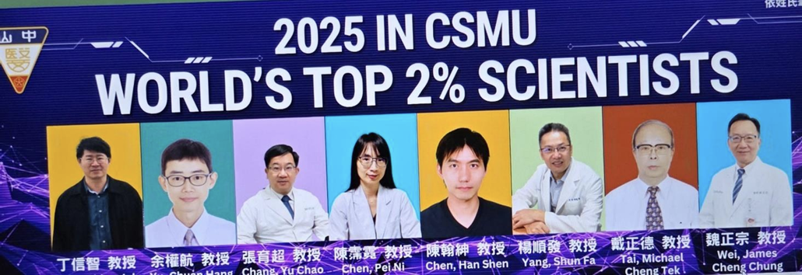
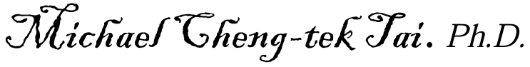

台 灣 醫 學 人 文 學 刊
第 二 十 六 卷 第 一 、 二 期
Vol. 26. No.1&2 December, 2025
ISSN: 1606-5727
Center of the Studies of Bioethics and Education
Social Empowerment Alliance, Taiwan.
生 命 倫 理 與 教 育 研 究 中 心
台 灣 社 會 改 造 協 會
台 灣 醫 學 人 文 學 刊
Formosan Journal of Medical Humanities
ISSN: 1606-5727
發行人 Publisher
蔡 篤 堅. Dr. Du-jian Tsai. M.D. Ph.D.
台 灣 社 會 改 造 協 會 學 術 委 員 會 召 集 人
Convener, Committee on Academic Affairs, Social Empowerment Alliance, Taiwan
顧 問 Domestic Advisors
方 基 存. Ji-Tseng Fang. M.D.
長 庚 醫 院 醫 學 教 育 委 員 會 副 主 席. 長 庚 大 學 醫 學 院 醫 學 系 教 授 / 前 主 任. TMAC 委 員.
Vice chair, Medical Education Committee, Chang Gung University.
Professor and former chairman, Dept of Medicine, Medical College, Chang Gung University.
Member, Taiwan Medical Accreditation Council
何 善 台 Shung-Tai Ho. M.D., M.P.H.
臺 北 榮 民 總 醫 院 前 副 院 長 國 立 陽 明 醫 學 院 醫 學 系 兼 任 教 授
Vice superintendent (formerly), Taipei Veteran General Hospital
Adjunct professor, Yangming University Medical College.
陳 順 勝. Sun-seng Chen. M.D.,Ph.D
台 灣 生 命 倫 理 學 會 前 理 事 長 高 雄 長 庚 醫 院 名 譽 副 院 長
President (formerly) Taiwan Bioethical Association.
Vice superintendent, Emeritus, Chang Gung Hospital, Kaoshiung.
楊 仁 宏 Jen-Hung Yang.M.D. Ph.D.
中 山 醫 學 大 學 醫 學 人 文 中 心 主 任. 慈 濟 大 學 醫 學 院 前 院 長. TMAC 前 執 行 長
Director, Center of Medical Humanities, Chung Shan Medical University.
Former Executive Director, Taiwan Medical Accreditation Council
Internatioanl Advisors:
George Agich. Ph.D. (USA). Founder of ICCEC (International Conference for Ethical
Consultation). Professor of Bioethics.
Sastrowijoto Soenarto MD. PhD. (Director, Center for Bioethics and Medical Humanities/
Professor, Faculty of Medicine, Universitas Gadjah Mada, Indonesia)
Yati Soenarto MD. PhD. (Professor, Universitas Gadjah Mada, Indonesia/ Chair, Pediatric
Research Office, Dr. Sardjito Academic Medical Center)
Paul Komesaroff MD. PhD. (Professor of Medicine, PRAXIS Australia and Centre for
Ethics/Monash University and Alfred Hospital)
Zabidi Azhar Mohd Hussin (Professor of Pediatrics/ Pro Vice-Chancellor, International Medical
University, Malaysia)
編 輯 委 員 Editorial Board
(International:)
Tsuyioshi Awayer. Ph.D. (Japan)
Salvador Ribas. Ph.D. (Spain)
Gordana Pelecic. M. D., Ph.D. (Croatia)
Xiao-mei Zhai. M. D., Ph.D. (China)
(Taiwan:)
蔡 篤 堅 Duujian Tsai. M.D., PhD.(Chair Professor, Pingtung Christian Hospital/ Distinguished
Research Fellow, Beijing Oriental Culture of life Research )
張 西 川 Shi-Chuan Chang M.D. PhD.(Chair Professor, Pingtung Christian Hospital )
郭 素 珍 Su-Chen Kuo Ph.D.(Adjunct Professor, National Taipei University of Nursing and Health Science )
李 世 代 Shyh-Dye Lee MD.,M.P.H. (Attending Physician, Fu Jen Catholic University Hospital/
Adjunct Professor, Fu Jen Catholic University)
楊 曜 臨 Yao-lin Yang. M. D.( Attending physician, Tzuchi Buddhist Hospital)
李 鴻 文 Hong-wen Lee. M. D. S., D.D.S.(Director, Customer of Elegance Dental Clinic)
陳 泓 燿 Hung-yao Chen. M.D.(Attending Physician, China Medical University Hospital)
陳 滋 彥 Tzy-yen Chen. Ph.D. (Attending physician, Lin shin Hospital)
總 編 輯 Chief Editor
戴 正 德 Michael Cheng-tek Tai.Ph.D. (Taiwan)
Associate editor : Salvador Ribas. Ph.D. (Spain)
編 輯 Editorial Secretary
Yuchia Chen. Ph.D.
John Johnson. M. A.
出 版 編 輯 部 Editorial Office
生 命 倫 理 與 教 育 研 究 中 心. 台 灣 社 會 改 造 協 會
通 信 處: 台 中 市 402 南 區 建 國 南 路 一 段 163-3 號 (tel:04-2262-5780)
台 北 市 104 中 山 區 渭 水 路 20 號 4 樓 (tel:02-2752-7920)
電 子 信 箱：Jmedhuman@gmail.com or mctaicht@gmail.com
Formosan Journal of Medical Humanities
Center of the Studies of Bioethics and Education.
Social Empowerment Alliance. Taiwan
E-Mail：Jmedhuman@gmail.com or mctaicht@gmail.com
台 灣 醫 學 人 文 學 刊 第 二 十 六 第 一 、 二 期
Formosan Journal of Medical Humanities Vol.26 No. 1&2 Dec. 2025
| 目 錄 Table of Contents | Page |
|---|---|
| From Editor’s Desk | 5 |
| Contributors | 6 |
| BIOETHICAL CONCERNS OF EMERGING AI TECHNOLOGIES IN CYBER-MEDICINE 人 工 智 能 應 用 在 在 醫 療 上 的 醫 學 倫 理 關 切 Suzana Vuletic. Ph.D.Sc. |
8 |
| Medical profession between conscience and (professional) obligations 醫 療 事 人 員 的 良 心 與 職 業 責 任 Ivana Tucak,Ph.D., Gordana Pelčić.M.D.,Ph.D |
31 |
| Respect for Autonomy in ALS: Decision-Support, Communication, and Justice as Enabling Conditions 在 肌 萎 症 患 者 中 之” 尊 重 自 主” Yuichi Minemura. Ph.D. 峰村優一. |
40 |
| The Concept of Autonomy amongst Muslim Patients in Malaysia Decision-Support, Communication, and Justice as Enabling Conditions 馬 來 西 亞 之 回 教 病 人 的 自 主 觀 念 Anisah Che Ngah. Ph.D., Ammar Hashim. M.D. |
46 |
| A Brief Discussion on the Burden of Healthcare in the Era of Artificial Intelligence: A Case Study on the Nursing Workforce Shortage 淺 談 在 人 工 智 慧 時 代 下 醫 療 照 護 負 荷 - 以 護 理 缺 工 為 例 Mei-Yu Lai, Chiu-Chu Chen, Tai, Michael Cheng-tek Tai.Ph.D. 賴 美 玉. 陳 秋 曲. 戴 正 德 |
52 |
| Bioethical Dilemmas in Organ Transplantation -The Role of Physicians and the possible changes in direction and feasibility 從 器 官 移 植 的 現 況 討 論 倫 理 問 題 -- 醫 師 在 其 中 的 角 色 並 探 索 可 能 的 改 變 方 向 與 做 法 Sabrina Chiying Liao 廖 芝 英 |
57 |
| The Historical Background of Dr. James L.Maxwell’s Medical Missionary Work in Taiwan. 馬 雅 各 醫 師 來 台 醫 療 宣 教 的 歷 史 背 景 Horng-Ming Yeh, M.D., M.P.H. 葉 宏 明 |
65 |
| Withdrawing Life-sustaining system is not a giving-up but a way to let life have a good ending 拔 管 不 是 放 棄 ， 而 是 讓 生 命 善 終 的 醫 療 倫 理 反 思 ------ 個 案 討 論 Li, YU-REN. M.D. 李羽仁 |
70 |
| 稿 約 / Introductions to Contributors | 74 |
We are very pleased that the Formsoan Journal of Medical Humanities Vol 26 is ready for you just before the end of 2025. Medical Huamanities is a new rising subject that lays the foundatrion of medical education from which medical studentts learn about medical ethics, medical professionalism, international relationmship between physicians and patients, medicine and society, life and death, medical sociology, research ethics, new medical technbology (AI) that effects the ways we treat patients….etc. Though this is a small journal, we are very proud that we have continued publishing since its onset in 1999. We appreciate many world famous scholars such as Robert Veatch, Hans Martin Sass, R. Van Pottor, Sherwin Nuland…. who gave us many good advice from time to time. All of them have passed on but their advice and opinion have always been remembered in our hearts.
Stanford University has selected World’s Top 2% Scientists each year since 2020 and we are proud to say that some authors of of this journal have made it to this renowned list. Below is the picture of the faculty members from SCMU that initiated this journal in the first place who were recorded to whom we give our congratulation.

AI is a hot topic that many shcolars delve in research. In this issue we have three artciles that dissuss about it. We hope more articles will tackle the issues of AI that has positive and also negative impact on medicine and human world in the coming issues. We are happy to open a sharing column that welcome the discussion related to medical humanities. In this issue we have an article that shares author’s view on assisted suicide and another article on palliatve care. These are important topics in medical humanities.
As we approach the Christmas season, we like to wish all readres a very Merry Christmas and a happy new year.
Sincerely,

Chief Editor.
Suzana Vuletic. Ph.D.Sc.
Full Prof, Josip Juraj Strossmayer University in Osijek – Catholic Faculty of Theology in Đakovo/Croatia
克 羅 埃 西 亞 Josip Juraj Strossmayer 大 學 神 學 院 教 授
Ivana Tucak, Ph.D.
Full Professor, Faculty of Law, University of Osijek, Croatia,
克 羅 埃 西 亞. Osijek 大 學 法 學 院 教 授
Josip Berdica,Ph.D.
Full Professor, Faculty of Law, University of Osijek, Croatia,
克 羅 埃 西. Osijek 大 學 法 學 院 教 授
Gordana Pelčić, M.D.,Ph.D.
Associate Professor, Faculty of Medicine, University of Rijeka, Croatia,
克 羅 埃 西 亞. Rijeka 大 學 醫 學 院 副 教 授
Anisah Che Ngah, Ph.D
(Formerly) Associate Professor. National University of Malaysia. Malaysia
馬 來 西 亞, 國 立 馬 來 西 亞 大 學 退 休 副 教 授
Ammar Hashim, M.D.
Head, Risk Management Unit, Sarawak General Hospital, Malaysia.
馬 來 西 亞 沙 勞 越 綜 合 醫 院 醫 師 兼 管 理 部 部 長
Yuichi Minemura. Ph.D. 峯 村 優 一. Associate Professor, Gunma Paz University. Japan
日 本 群 馬 大 學 醫 療 技 術 部 准 教 授
Mei-yu Lai. RN, MSN. 賴 美 玉
Head Nurse, Department of Nursing, Chung Shan Medical University Hospital
Adjunct Lecturer, Center for General Education, Chung Shan Medical University. Taiwan
台 灣 中 山 醫 學 大 學 附 設 醫 院 護 理 長 暨 中 山 醫 學 大 學 通 識 教 育 中 心 兼 任 講 師
Chiu-chu Chen. RN.,M.Sc. 陳 秋 曲
Supervisor, Department of Nursing, Chung Shan Medical University Hospital. Adjunct lecturer,
School of Nursing, Chung Shan Medical University, Taiwan
台 灣 中 山 醫 學 大 學 附 設 醫 院 護 理 督 導 暨 中 山 醫 學 大 學 護 理 系 兼 任 講 師
Michael Cheng-tek Tai, Ph.D. 戴 正 德
Chair professor, Chungshan Medical University. Taiwan.
World’s Top 2% Scientist, 2013. 2014.
台 灣 中 山 醫 學 大 學 榮 譽 講 座 教 授. 2013.2014 年 世 界 頂 尖 前 2ç% 學 者
Sabrina Chi-ying 廖 芝 英
Department of Medicine, China edical University, Taiwan
台 灣 台 中 市 中 國 醫 藥 大 學 醫 學 院 醫 學 系
Li, Yu-Ren. M.D. 李 羽 仁
Director, Medical Intestive Care Unit, Pingtung Christian Hospital, Taiwan
台 灣 屏 東 基 督 教 醫 院 成 人 內 科 加 護 病 房 醫 師 / 教 學 研 究 室 主 任
Prof. Suzana Vuletic. Ph.D.Sc.
Suzanavuletic007@gmail.com
Josip Juraj Strossmayer University in Osijek – Catholic Faculty of Theology in Đakovo/Croatia
Abstract
Innovative biotechnological discoveries in medicine are significantly contributing to the advancement of human health and the overall quality of life. Increasingly, these developments aim to overcome certain natural biological limitations through the enhancement of human capabilities. This is being enabled by the integration of converging technologies and artificial intelligence within the emerging field of cyber-medicine.
However, such progressive aspirations raise substantial bioethical and legal concerns high-lighting the unpredictability of long-term consequences, as well as the potentially uncontrollable side effects that may arise from altering the fundamental nature of human life in a post-humanist context.
Transhumanism, which promotes the radical transformation of human existence, introduce a host of complex anthropological, philosophical, bioethical and legal questions. Central to these concerns are issues related to biological identity, human dignity and the preservation of essential anthropological constants. In this context, it becomes imperative to establish clear algorethical frameworks that can guide the responsible development and deployment of AI-driven technologies, thereby safeguarding core human values.
Key words:
algorethics, Artificial Intelligence (AI), bioethics, cyber medicine, converting technologies, healthcare transformation, law, posthuman identity, transhumanist anthropology.
Introduction
The continuous advancement of artificial intelligence (AI) is increasingly influencing nearly every aspect of human life. In medicine, it plays a particularly significant role by transforming traditional approaches to diagnosis, treatment planning, and healthcare management through clinical decision support (CDS).[1] These advancements are driven by a range of AI techniques, such as machine learning (ML), deep learning (DL), natural language processing (NLP) and recently, large language models (LLMs) used to process and interpret unstructured medical records, generate clinical documentation and assistant support in medical research. More recently, Convolutional Neural Networks (CNNs) have significantly improved the accuracy of medical imaging diagnoses, while Natural Language Processing (NLP) algorithms have enhanced the extraction of insights from unstructured data, including Electronic Health Records (EHRs).[2]
Through the application of advanced algorithms and the analysis of large-scale datasets, AI enables faster and more accurate diagnoses, supports personalized therapeutic interventions, and improves the overall efficiency of healthcare professionals. Emerging integrative technologies are fundamentally transforming medical practice, encompassing fields such as cyber-medicine, robotic medicine and digiceuticals innovations that seamlessly merge digital technologies with biomedical sciences to drive the future of healthcare.
Cyber-medicine is an emerging interdisciplinary field combining medicine, AI, and cybernetic technologies to integrate biological and digital systems. It aims to enhance, restore, or surpass human physiological and cognitive functions. Rooted in transhumanist principles, cyber-medicine employs AI-driven diagnostics, bioelectronic implants, neural interfaces, and data-driven innovations to redefine health, disease, life, and mortality, ultimately pursuing human enhancement.
Nonetheless, these advancements bring potential challenges and significant ethical concerns. The integration of AI and emerging technologies in medicine raises critical issues related to patient safety, data privacy, and the possible reduction of the human element in essential decision-making processes. Furthermore, fears of loss of control, technical failures, and unequal access to healthcare underscore the urgent need for responsible and transparent development and implementation of these technologies to ensure they benefit all stakeholders fairly and ethically.
This prompts urgent bioethical, anthropological, and legal questions, especially within the realm of cyber-medicine, a field where AI and digital technologies increasingly blur the boundaries between biological and artificial components, giving rise to novel bio-hybrid systems. Such a despotic digital anthropology reorients the focus away from defining what humanity is toward exploring what humanity could become. This shift further raises critical questions: Are we permitted to breach the natural barriers set by biology in our pursuit of enhanced human capacities? How can we resist the alluring temptation to endlessly improve ourselves and future generations through cybernetic interventions? Where should we draw the line in this rapidly evolving technological landscape? How can we ensure transparency and accountability in AI systems without leaving regulators behind in the race of rapid techno-medical progress? Finally, in the rapidly evolving field of cyber-medicine, can the widening gap between scientific knowledge and technological capabilities keep pace with society’s ethical awareness and understanding of the human values at stake?
Many of these challenges can be effectively mitigated through thoughtful system design, adherence to algorethical programming principles, transparency, and responsible application. Moreover, the establishment of clear regulatory frameworks and guidelines is essential to ensure the safe, ethical, and equitable deployment of AI technologies in medicine.
"The pervasiveness of new technologies and their applications is blurring the boundaries between human and machine, between online and offline activities, between the physical and the virtual world, between the natural and the artificial, and between reality and virtuality. Humankind is increasing its abilities by boosting them with the help of machines, robots and software. A shift has been made from the “treated” human being to the “repaired” human being, and what is now looming on the horizon is the “augmented” human being”.[7]
Protection of Human Dignity, Human Rights and Individual Autonomy: AI systems should be designed to uphold and protect personal freedoms and fundamental rights, ensuring that technological progress never compromises the inherent worth of individuals.
Transparency and Oversight: AI systems must provide clear accessibility and explainability, enabling individuals to understand how decisions are made and how the system operates.
Equality, Justice, Fairness and Non-discrimination: It is essential that AI systems are developed and trained on diverse and representative datasets to minimize biases. Continuous monitoring and auditing must be established to detect and prevent discriminatory outcomes, especially in sensitive fields like healthcare.
Privacy, Confidentiality and Personal Data Protection: Strong technical safeguards including encryption, access controls, and cybersecurity protocols must be implemented to protect patient data and ensure confidentiality, with informed consent as a fundamental requirement.
Accountability, Responsibility, Reliability, Safety and Security: AI systems should be robust, secure against external threats, and designed to avoid unintended harmful actions, following the precautionary principle. Clear accountability mechanisms must be in place to define responsibility among all stakeholders involved.
Need for ethical review in biomedical research and limitations on competences and capacities of ethics review bodies to assess the unique risks and opportunities of AI;
Liability of AI providers in medicine and healthcare;
Protection of personal data in the context of harmonising data systems and supporting AI innovation and research in Europe.
Ensuring lawfulness, fairness, purpose specification, proportionality, privacyby-design and default, responsibility, compliance, transparency, data security, and risk management.
Guaranteeing meaningful control and informed consent for patients and other data subjects.
Positive obligations for states to protect life and health via national reporting mechanisms.
Beneficence and prevention of malign use with respect for human rights and dignity.
Safety and precaution must be ensured before any new applications are put into use.
Privacy and confidentiality must be protected according to general principles of data protection.
Capacity and autonomy - this technology should not be used against a subject’s will.
Human agency and responsibility - must remain the only decision-makers and the primary actors in society.
Equity, integrity and inclusiveness - it should be implemented with respect for human equality and dignity, including of members of marginalized or vulnerable groups; and it should be made available as widely as possible, especially insofar as they are applied for medical purposes.
Ensuring public trust through transparency, consultation and education/awareness-raising. With the confidence of the public, in awareness of the benefits as well as the potential dangers.
Conclusion:
--Reframing Technocratic AI Bioethics: Toward a Human-Centric Algorethics
Despite widespread enthusiasm surrounding the integration of artificial intelligence into biomedicine, it is clear that technological advancement cannot be dissociated from ethical reflection and responsibility.
Considering the inherent unpredictability of biotechnological innovations and their profound anthropological and bioethical implications, trust in digital systems must extend beyond mere technical precision. Instead, it must be grounded within a broader epistemological and moral framework that safeguards human autonomy, dignity, and the right to physical and mental integrity.
This imperative calls for the development of a human-centered technocratic AI bioethics, often termed algorethics, that aligns technological innovation with biolegal norms, medical deontology, moral codes, and fundamental human values. In light of the growing influence of transhumanist narratives within cyborg medicine, such a framework must not only guide innovation but also critically resist the reduction of human existence to a project of limitless optimization. It must actively confront the seductive illusions of technocratic well-being, psychophysical perfection, and biotechnological immortality, which risk undermining the fragility, dignity, and moral depth of the human condition.
Navigating the ethical complexity inherent in artificial intelligence and biotechnology demands more than technological innovation—it requires wisdom, responsibility, and a steadfast commitment to the common good. As Stephen Hawking aptly warned, “Our future is a race between the growing power of technology and the wisdom with which we use it.” Only by aligning innovation with the principles of algorethics can we ensure that this race culminates in a future that genuinely benefits humanity. Through proactive engagement, we can harness the full potential of AI to enhance healthcare outcomes while safeguarding our fundamental ethical values.
References:
| 1. | Cf. WORLD HEALTH ORGANIZATION, Ethics and governance of artificial intelligence for health: WHO guidance, (2021)., https://www.who.int/publications/i/item/9789240029200. |
| 2. | Cf. P. S. ARAVAZHI, P. GUNASEKARAN, N. Z. Y. BENJAMIN et al., The integration of artificial intelligence into clinical medicine: Trends, challenges, and future directions, Dis Mon 71 (2025.) 6:101882. doi: 10.1016/j.disamonth.2025.101882. |
| 3. | Cf. THE EDITORS OF ENCYCLOPAEDIA BRITANNICA, «Artificial intelligence», Encyclopaedia Britannica, 2025. https://www.britannica.com/technology/artificial-intelligence (23.9.2025.) |
| 4. | EUROPEAN COMMISSION, Approval of the content of the draft Communication from the Commission - Commission Guidelines on the definition of an artificial intelligence system established by Regulation (EU) 2024/1689 (AI Act), Brussel, 6.2.2025., 2. |
| 5. | Cf. PARLIAMENTARY ASSEMBLY, COUNCIL OF EUROPE, Need for democratic governance of artificial intelligence, 2020., https://pace.coe.int/en/files/28804/html |
| 6. | TAI, Michael CHENG-TEK, Artificial Intelligence, Society and Bioethics, Formosan Journal of Medical Humanities 25 (2024.) 1-2., 31-40., 31. |
| 7. | PARLIAMENTARY ASSEMBLY, Technological convergence, artificial intelligence and human (2017). en.asp?fileid=23531&lang=en |
| 8. | Cf. J. SAVULESCU, N. BOSTROM (ed.), Human Enhancement, New York, 2009.; I. PERSSON, J. SAVULESCU, Unfit for the Future: The Need for Moral Enhancement, Oxford, 2012. |
| 9. | J. SAVULESCU , Genetic interventions and the ethics of enhancement of human beings, in: B. Steinbock (ed.), The Oxford Handbook of Bioethics, New York, 2007., 516–535., 516. |
| 10. | K. WARWICK, Cyborg 1.0.” http://wired.com. |
| 11. | O. G. SINGBO, Teološko-bioetičko vrjednovanje transhumanističke antropologije, Zagreb, 2021., 164. |
| 12. | https://www. forbes.com/sites/ericmack/2015/01/28/bill-gates-also-worries-artificialintelligence-is-a threat/#6da70b6d651f (28.1.2015.) |
| 13. | https://www.theverge.com/2014/8/3/5965099/elon-musk-compares-artificial-intelligence-to nukes (3.8.2014.) |
| 14. | Cf. N. BOSTROM, Superintelligence: paths, dangers, strategies, Oxford, 2014. chromeextension://efaidnbmnnnibpcajpcglclefindmkaj/https://www.fhi.ox.ac.uk/wp-content/uploads/1s2.0-S0016328715000932-main.pdf |
| 15. | Cf. S. HAWKING, Full interview with https://www.bbc.com/news/av/technology-30299992 (2.12.2014.) Rory Cellan-Jones. 16. Cf. I. KELAM, M. BAŠIĆ BUČANOVIĆ, Z. KALUĐEROVIĆ MIJARTOVIĆ, Budućnost čovjeka u kontekstu transhumanizma, Jahr 14/2 (2023.) 28, 353-376., 357. |
| 16. | Cf. I. KELAM, M. BAŠIĆ BUČANOVIĆ, Z. KALUĐEROVIĆ MIJARTOVIĆ, Budućnost čovjeka u kontekstu transhumanizma, Jahr 14/2 (2023.) 28, 353-376., 357. |
| 17. | CENTER FOR AI SAFETY, Statement on AI Risk, 2023., https://www.safe.ai/statement-on ai-risk. |
| 18. | Cf. I. GREGURIĆ, Kibernetička bića u doba znanstvenog humanizma. Prolegomena za kiborgoetiku, Zagreb, 2018., 75–92. |
| 19. | Cf. S. VULETIĆ, L. TOMAŠEVIĆ, Bio/tehnološka konstrukcija integrativne bioetike, in: V. Valjan (ed.), Integrativna bioetika pred izazovima biotehnologije, Sarajevo, 2012., 45–69.; S. VULETIĆ, Ž. FILAJDIĆ, M. IVANČIČEVIĆ, Transhumanistička eugenika. Protetička kiborgizacija ljudskog poboljšanja nano-medicinskim zahvatima, in: M. Steiner, I. Šestak (ed.), Aktualne moralne teme, Zagreb, 2016., 245–268. |
| 20. | Cf. F. GALKIN, A. ZHAVORONKOV, AI in Longevity. In Artificial Intelligence for Healthy Longevity, Berlin/Heidelberg, 2023., 3–13.; A. ZHAVORONKOV, P. MAMOSHINA, Q. VANHAELEN et al., Artificial intelligence for aging and longevity research: Recent advances and perspectives, Ageing Res. Rev. 49 (2019.), 49–66. doi: 10.1016/j.arr.2018.11.003. |
| 21. | Cf. O. G. SINGBO, Teološko-antropološka paradigma u rastućoj kulturi umjetnih inteligencija, Nova prisutnost 18 (2020.) 1, 47-60., 54. |
| 22. | Cf. K. NIKODEM, Tehno-identiteti kiborga, Socijalna ekologija 13 (2004.) 2.,175-196., 176. |
| 23. | Cf. I. GREGURIĆ, Novi mediji i kiborgizirano tijelo kao prostor umjetnosti transhumanizma, In Medias Res 2. (2013.) 3., 350-364., 351. |
| 24. | Cf. RATHENAU INSTITUUT, Human rights in the robot age. Challenges arising from the use of robotics, artificial intelligence, and virtual and augmented reality, 2017., 6.; 14. chromeextension://efaidnbmnnnibpcajpcglclefindmkaj/https://www.rathenau.nl/sites/default/files/201802/Human%20Rights%20in%20the%20Robot%20Age-Rathenau%20Instituut-2017.pdf |
| 25. | WORLD TRANSHUMANIST ASSOCIATION (HUMANITY+), Transhuman Declaration. (1998.; 2009). https://www.humanityplus.org/the-transhumanist-declaration |
| 26. | Cf. HIGH-LEVEL EXPERT GROUP ON ARTIFICIAL INTELLIGENCE SET UP BY THE EUROPEAN COMMISSION, Ethics Guidelines For Trustworthy AI, 2019., 36. https://digitalstrategy.ec.europa.eu/en/library/ethics-guidelines-trustworthy-ai |
| 27. | Cf. K. SINGH, A. PRABHU, N. KAUR, The Impact and Role of Artificial Intelligence (AI) in Healthcare: Systematic Review, 10.2174/0115680266339394250225112747. |
| 28. | Cf. S. QIU, Z. PEI, C. WANG et al., Systematic Review on Wearable Lower Extremity Robotic Exoskeletons for Assisted Locomotion, J Bionic Eng 20 (2023.), 436–469. doi.org/10.1007/s42235-022-00289-8 |
| 29. | PARLIAMENTARY ASSEMBLY, COUNCIL OF EUROPE, The brain-computer interface: new new threats https://pace.coe.int/en/files/28722/html |
| 30. | Cf. S. ZAFAR, M. NAZIR, T. BAKHSHI et al., A Systematic Review of Bio-Cyber Interface Technologies and Security Issues for Internet of Bio-Nano Things, Computer Science > Networking and Internet Architecture. doi.org/10.1109/ACCESS.2021.3093442 |
| 31. | Cf. J. S. BECKMANN, D. LEW, Reconciling evidence-based medicine and precision medicine in the era of big data: challenges and opportunities, Genome Med. (2016.) 8:134. doi: 10.1186/s13073-016-0388-7; Z. OBERMEYER, E. J. EMANUEL, Predicting the future - big data, machine learning, and clinical medicine, N Engl J Med. (2016.) 375, 1216–1219. doi: 10.1056/NEJMp1606181. |
| 32. | Cf. V. BOŽIĆ, Virtual hospital, Bilt. Hrvat. druš. med. inform. 29 (2023.) 1., 19-30., 20. |
| 33. | Cf. J. H. MAHAR, J. G. ROSENCRANCE, P. A. RASMUSSEN, Telemedicine: Past, present, and future, Cleve Clin J Med 85 (2019.) 12., 938-942. |
| 34. | Cf. B. MITTELSTADT et al., The Ethical Implications of Personal Health Monitoring, International journal of technoethics 5 (2014.) 2., 37-60. |
| 35. | Cf. D. M. KORNGIEBEL, S. D. MOONEY, Considering the possibilities and pitfalls of Generative Pretrained Transformer 3 (GPT-3) in healthcare delivery, Digital Medicine 4 (2021.) 93. doi.org/10.1038/s41746-021-00464-x |
| 36. | S. QUAZI, Artificial intelligence and machine learning in precision and genomic medicine, Med Oncol. 15 (2022.) 39(8):120. doi: 10.1007/s12032-022-01711-1. |
| 37. | S. PRICE, Technological innovations of AI in medical diagnostics, https://www.healtheuropa.eu/technological-innovations-of-ai-in-medical-diagnostics/103457/ |
| 38. | Cf. A. DASHTI, S. ANI, Exploring the frontiers of cryonics: Feasibility, benefits, and future impact on humanity, World Journal of Biology Pharmacy and Health Sciences 20 (2024.) 02., 602–608. doi.org/10.30574/wjbphs.2024.20.2.0785 |
| 39. | Cf. J. H. CHEN, A. BEAM, S. SARIA, E. MENDONÇA, Potential trade-offs and unintended consequences of AI, in: M. Matheny, I. S. Thadaney, M. Ahmed, D. Whicher (ed.), Artificial intelligence in health care: The hope, the hype, the promise, the peril, Washington DC, 2019. |
| 40. | Cf. HIGH-LEVEL EXPERT GROUP ON ARTIFICIAL INTELLIGENCE, Ethical Guidelines Trustworthy Artificial Intelligence. https://www.europarl.europa.eu/ meetdocs/2014_2019/plmrep/COMMITTEES/JURI/DV/2019/11-06/Ethics-guidelines-AI_ HR.pdf |
| 41. | NUFFIELD COUNCIL ON BIOETHICS, Artificial intelligence (AI) in healthcare and research, 2018. http://nuffieldbioethics.org/wp-content/uploads/Artificial-Intelligence-AI-in healthcare-andresearch.pdf. |
| 42. | COUNCIL OF EUROPE, STEERING COMMITTEE FOR HUMAN RIGHTS IN THE FILED OF BIOMEDICINE AND HEALTH (CDBIO), The impact of Artificial Intelligence on the relationship (2021.), 4., 25., 244-62. chrome extension://efaidnbmnnnibpcajpcglclefindmkaj/https://rm.coe.int/inf-2022-5-report-impact-of-ai on-doctor-patient-relations-e/1680a68859. |
| 43. | E. VVEDENSKAYA, Bioethical Aspects of Robotics in Surgery, Jahr 12/1 (2021) 23, 129 139., 130. |
| 44. | E. MORROW, T. ZIDARU, F. ROSS et al., Artificial intelligence technologies and compassion in healthcare: A systematic scoping review, Front Psychol. (2023.) 13:971044. doi: 10.3389/fpsyg.2022.971044. |
| 45. | Cf. COUNCIL OF EUROPE, http://www.coe.int/en/web/bioethics/emerging-technologies |
| 46. | Cf. EUROPEAN COMMISSION, WHITE PAPER On Artificial Intelligence - A European approach excellence and trust, Brussels, 2020. https://commission.europa.eu/publications/white-paper-artificial-intelligence-european approach-excellence-and-trust_en |
| 47. | WORLD HEALTH ORGANIZATION, Ethics and governance of large multi-modal models. https://www.who.int/news/item/18-01-2024-who-releases-ai-ethics-and-governance-guidancefor-large-multi-modal-models |
| 48. | UNESCO, Recommendation on the Ethics of Artificial Intelligence, (23.11.2021.), 5. https://unesdoc.unesco.org/ark:/48223/pf0000381137 |
| 49. | https://www.whitehouse.gov/presidential-actions/2025/01/removing-barriers-to-americanleadership-in-artificial-intelligence/ |
| 50. | https://digichina.stanford.edu/work/full-translation-chinas-new-generation-artificialintelligence-development-plan-2017/ |
| 51. | https://www.eu-japan.ai/japan-aims-for-ai-ready-society-through-seven-social-principles-ofhuman-centric-ai/ |
| 52. | https://www.canada.ca/en/government/system/digital-government/digital-governmentinnovations/responsible-use-ai/gc-ai-strategy-overview.html |
| 53. | https://tadviser.com/index.php/Article:National_Strategy_for_the_Development_of_Artificial_Intelligence |
| 54. | chrome_extension://efaidnbmnnnibpcajpcglclefindmkaj/https://www.niti.gov.in/sites/default/files/2023-03/National-Strategy-for-Artificial-Intelligence.pdf |
| 55. | All referenced documents are retrievable from the official Council of Europe website: https://pace.coe.int/en/pages/official-documents |
| 56. | All referenced documents can be accessed via https://www.coe.int/en/web/artificialintelligence/cai |
| 57. | Cf. EUROPEAN COMMISSION, ANNEX to the Communication to the Commission Approval of the content of the draft Communication from the Commission - Commission Guidelines on prohibited artificial intelligence practices established by Regulation (EU) 2024/1689 (AI Act), Brussel, 4.2.2025. https://digital-strategy.ec.europa.eu/en/library/commission-publishes-guidelines-prohibitedartificial-intelligence-ai-practices-defined-ai-act |
| 58. | Cf. COUNCIL OF EUROPE, Framework Convention on Artificial Intelligence and Human Rights, Democracy and the Rule of Law, 2024., 4. https://www.coe.int/en/web/artificialintelligence/the-framework-convention-on-artificial-intelligence |
| 59. | E. B. WEINER, I. DANKWA-MULLAN, W.A. NELSON, S. HASSANPOUR, Ethical challenges and evolving strategies in the integration of artificial intelligence into clinical practice, PLOS Digit Health. 4 (2025. 4:e0000810. doi: 10.1371/journal.pdig.0000810. |
| 60. | ORGANISATION FOR ECONOMIC CO-OPERATION AND DEVELOPMENT (OECD), Recommendation of the Council On Artificial Intelligence, 2019. 62. https://legalinstruments.oecd.org/en/instruments/oecd-legal-0449 |
| 61. | HIGH-LEVEL EXPERT GROUP ON ARTIFICIAL INTELLIGENCE SET UP BY THE EUROPEAN COMMISSION, Ethics Guidelines For Trustworthy AI…, 2-3.; 5. |
| 62. | PONTIFICAL ACADEMY FOR LIFE, Rome Call for AI Ethics (2020). https://www.vatican.va/roman_curia/pontifical_academies/acdlife/documents/rc_pontacd_life_doc_20202228_rome-call-for-ai-ethics_en.pdf |
| 63. | The Abrahamic Commitment to the Rome Call for AI. https://www.romecall.org/theabrahamic-commitment-to-the-rome-call-forai-ethics-10th-january-2023/ |
| 64. | DICASTERY FOR THE DOCTRINE OF THE FAITH - DICASTERY FOR CULTURE AND EDUCATION, Antiqua et Nova, .https://www.vatican.va/roman_curia/congregations/cfaith/documents/rc_ddf_doc_20250128_antiqua-et-nova_en.html |
| 65. | Y. ZENG, E. LU, C. HUANGFU, Linking artificial intelligence principles, in: Proceedings of the AAAI Workshop on Artificial Intelligence Safety, Aachen: CEUR Workshop Proceedings, 2019. https://arxiv.org/ftp/arxiv/papers/1812/1812.04814.pdf |
| 66. | A. JOBIN, M. IENCA, E. VAYENA, The global landscape of AI ethics guidelines, Nature Machine Intelligence 1 (2019.), 389–399.; S. Gerke, T. Minssen, G. Cohen, Ethical and legal challenges of artificial intelligence-driven healthcare, Artificial Intelligence in Healthcare 25 (2020.), 295–336. doi: 10.1016/B978-0-12-818438-7.00012-5 |
| 67. | Cf. WORLD HEALTH ORGANIZATION, Ethics and governance of artificial intelligence for health: WHO guidance, Geneva, 2021., 23-30. |
| 68. | COUNCIL OF EUROPE, Artificial intelligence in health care: medical, legal and ethical challenges ahead (2020.). https://pace.coe.int/en/files/28813/html |
| 69. | PARLIAMENTARY ASSEMBLY, COUNCIL OF EUROPE, Recommendation 2017 Nanotechnology: balancing benefits and risks to public health and the environment (2013), in: Council of Europe, Texts of the Council of Europe on bioethical matters, Volume II., Human Rights Policy and Development Department Bioethics Unit, Strasbourg, 2014., 86–87. |
| 70. | Cf. PARLIAMENTARY ASSEMBLY, COUNCIL OF EUROPE, The brain-computer interface: new rights or new threats to fundamental freedoms? (2020), 3-4. https://pace.coe.int/en/files/28722/html |
| 71. | Cf. COUNCIL OF EUROPE, STEERING COMMITTEE FOR HUMAN RIGHTS IN THE FILED OF BIOMEDICINE AND HEALTH (CDBIO), The impact of Artificial Intelligence on the doctor-patient relationship…, 6. |
| 72. | HIGH-LEVEL EXPERT GROUP ON ARTIFICIAL INTELLIGENCE SET UP BY THE EUROPEAN COMMISSION, Ethics Guidelines For Trustworthy AI…, 12-13. |
| 73. | Cf. M. R. MacINTYRE, R. G. COCKERILL, O. F. MIRZA, J. M. APPEL, Ethical considerations for the use of artificial intelligence in medical decision-making capacity assessments, Psychiatry Res. (2023.) 328: 115466. doi: 10.1016/j.psychres.2023.115466. |
| 74. | Cf. PARLIAMENTARY ASSEMBLY, COUNCIL OF EUROPE, Preventing discrimination caused by the use of artificial intelligence (2020), 1. https://pace.coe.int/en/files/28809/html |
Ivana Tucak.Ph.D*. Josip Berdica. Ph.D. ** Gordana Pelčić. M.D.,Ph.D. ***
*Full Professor, Faculty of Law, University of Osijek, Croatia. itucak@pravos.hr
** Full Professor, Faculty of Law, University of Osijek, Croatia. jberdica@pravos.hr
***Associate Professor, Faculty of Medicine, University of Rijeka, Croatia. gordana.pelcic@medri.uniri.hr
»An individual who breaks a law that conscience tells him is unjust, and who willingly accepts the penalty of imprisonment in order to arouse the conscience of the community over its injustice, is in reality expressing the highest respect for law«. (Martin Luther King, Letter from a Birmingham Jail)
Abstract
Freedom of conscience is today considered a fundamental human right, contained in the most important international human rights documents and in the constitutions of liberal democracies. However, like the vast majority of other fundamental human rights, it is not an absolute category. The real challenge today lies in determining its boundaries. In this paper, the authors address the problem of the contemporary understanding of conscience and its conceptualization, with particular emphasis on the medical profession, which, along with the legal profession, is most closely related to the issues of choice between good and evil, and in fact the values on which conscience is based.
Keywords:
conscience; conscience objection, abortion, professionalism
“Obstetrician-gynecologists have a right to be respected for their conscientious convictions, when these are genuine and clearly expressed. Politically motivated or financially motivated assertions of ‘conscience’ are egregiously unethical. Obstetrician-gynaecologists who express conscience-based convictions that are genuine should not suffer discrimination on the basis of their convictions, provided that the obstetrician-gynaecologist fulfils the professional responsibility to see to it that the patient receives the clinical management that the patient has authorised“ (FIGO, 2021, Recommendation, 4).
Bibliography:
| Aramini, M (2009). Uvod u bioetiku [Introduction to bioethics]. Kršćanska sadašnjost. Zagreb. |
| Bauman, Z. (2009). Postmoderna etika [Postmodern Ethics]. AGM. Zagreb. |
| Ben-Moshe, N. (2019). The truth behind conscientious objection in medicine. J Med Ethics. Jun; 45 (6):404-410. doi: 10.1136/medethics-2018-105332. Epub 2019 Jun 20. PMID: 31221763. |
| Berdica, J. (2024). Pravednost i mišljenje kao prve vrline : u čast Johna Rawlsa (2002. – 2022.) [Justice and Thought as the First Virtues: In Honor of John Rawls (2002-2022)]. Naklada Jesenski i Turk. Zagreb. |
| Berdica, J. / Nedić, T. (2019). Conscientious Objection and Legal Profession: Critical Review about Legal (Lack of) Culture. Philosophical Investigations 39 / 1. doi.org/10.21464/fi39117 Berdica, J. / Rudan, D. (2023). When the Law Becomes a »Prison«. On the Twentieth Anniversary of the Death of John B. Rawls. Philosophical Investigations 43 / 3. doi.org/10.21464/fi43306. |
| Borovečki A, Babić-Bosanac S. (2017). Discourse, ethics, public health, abortion, and conscientious objection in Croatia. Croat Med J. 31;58 (4):316-321. PMID: 28857525. |
| CCPR/C/HRV/CO/4: Concluding observations on the fourth periodic report of Croatia. Available at: https://www.ohchr.org/en/documents/concluding-observations/ccprchrvco4-concluding-observations-fourth-periodic-report [Accessed 17 November 2025]. |
| The Constitution of The Republic of Croatia. Official Gazette - 56/90, 135/97, 08/98/ 113/00, 124/00, 28/01, 41/01, 55/01, 76/10, 85/10, 05/14. |
| Dnevnik.hr (2025). Imaju li žene u Hrvatskoj pravo na pobačaj samo na papiru? “Vojni priziv savjesti se kažnjava, medicinski nagrađuje” [“Do women in Croatia have the right to abortion only on paper? ‘Conscientious objection is punished in the military, but rewarded in medicine.’”]. Available at: https://dnevnik.hr/vijesti/hrvatska/provjereno-imaju-li-zene-u-hrvatskoj-pravo-na-pobacaj-samo-na-papiru-u-tri-bolnice-zahvat-se-uopce-ne-obavlja-vojni-priziv-savjesti-se-kaznjava-medicinski-nagradjuje---943385.html [Accessed 17 November 2025]. Etički kodeks primalja (Midwives’ Code of Ethics). Available at: https://www.komoraprimalja.hr/wp-content/uploads/2013/11/Eti%C4%8Dki-kodeks-primalja_2010_final.pdf [Accessed 17 November 2025]. International |
| FIGO, 2021. Ethics and Professionalism Guidelines for Obstetrics and Gynecology, Second ed. [online] Federation of Gynaecology and Obstetrics. Available at: https://www.figo.org/sites/default/files/2021-11/FIGO-Ethics-Guidelines-onlinePDF.pdf [Accessed 17 November 2025]. |
| Fusaro, D. (2025). Novi erotski poredak [New erotic order]. Kršćanska sadašnjost: Zagreb. |
| Greasley, K. (2017). Arguments about Abortion: Personhood, Morality, and Law. Oxford. |
| Greenawalt, K. (2013). Religious Toleration and Claims of Conscience, 28 J. Contemp. Legal Issues 91. Available at: https://scholarship.law.columbia.edu/faculty_scholarship/3252. [Accessed 17 November 2025]. |
| Giubilini, A., and others (2025). Rethinking Conscientious Objection in Health Care. New York, NY, 2025; online edn, Oxford Academic. https://doi.org/10.1093/9780197786567.001.0001 [accessed 24 June 2025]. |
| Horvat Vuković, A. (2021). Ustav Republike Hrvatske i priziv savjesti u pružanju zdravstvenih usluga [Constitution of the Republic of Croatia and Conscientious Objection in the Provision of Health Services]. In Ustavne promjene i političke nagodbe – Republika Hrvatska između ustavne demokracije i populizma / Bačić, A. (ed.). Zagreb: Hrvatska akademija znanosti i umjetnosti (HAZU), pp. 435-464. |
| Hrvatski zavod za javno zdravstvo [Croatian Institute of Public Health]. (2025). Pobačaji i prekidi trudnoće u zdravstvenim ustanovama u Hrvatskoj 2024. godine [Miscarriages and Abortions in Croatian Health Institutions in 2024]. Available at: https://www.hzjz.hr/wpcontent/uploads/2025/10/Bilten_-_pobacaji_u_RH_2024._g..pdf [Accessed 17 November 2025]. Jaspers, K. (1998). Duhovna situacija vremena [Man in the Modern Age]. Matica hrvatska. Zagreb. |
| Kozelj, I. (1990). Savjest [Conscience]. FTI DI. Zagreb. |
| Leigh, I. (2019). The Courts and Conscience Claims. In J. Adenitire (ed), Religious Beliefs and Conscientious Exemptions in a Liberal State, Hart, ch. 6, ISBN 9781509920938 (submitted version). |
| Marques-Pereira, B. (2023). Abortion in The European Union. Actors, Issues and Discourse. The Foundation for European Progressive Studies (FEPS), The Karl Renner Institute. Available at: https://feps-europe.eu/wp-content/uploads/2023/03/Abortion-in-the-European-Union.pdf [Accessed 17 November 2025]. |
| Martínez-Torrón, J. (2019). Adjusting general legal rules to freedom of conscience: the Spanish approach. Revue du droit des religions, 7:131-151. |
| Marx, K. / Engels, F. (1974). Dela – Sv. 7 [Works – Vol. 7]. Prosveta. Beograd. |
| Pravobraniteljica za ravnopravnost spolova [The Ombudsperson for Gender Equality] (2025). Izvješće o radu za 2024. Available at: https://www.prs.hr/application/uploads/Izvjes%CC%8Cc%CC%81e_2024_CJELOVITO_FINAL_.pdf. [Accessed 17 November 2025]. |
| Rawls, J. (1999). A Theory of Justice: Revised Edition. Belknap Press of Harvard University Press. Cambridge. |
| Savulescu, J. (2006). Conscientious Objection in Medicine. BMJ; 332:294. DOI: 10.1136/bmj.332.7536.294. |
| Todorov, T. (2015). Duh prosvjetiteljstva [In defence of the enlightenment]. TIM Press. Zagreb. |
| Tucak, I. / Berdica, J. / Seleš, L. (2025). The Future of Abortion in Croatia. Bioethics and Social Ethics in the Modern World: The Environmental and Social Sustainability Contexts. Edts. Ivan Pavić, Nikša Alfirević, Suzana Vuletić. Palgrave Macmillan. Cham. doi.org/10.1007/978-3-031-86418-6_8. |
| Ustavni sud Republike Hrvatske [Constitutional Court of the Republic of Croatia] (2017). Rješenje Ustavnog suda Republike Hrvatske broj U-I-60/1991 i dr. od 21. veljače 2017. i Izdvojeno mišljenje. Official Gazette - 25 / 2017. |
| Vargić, H. (2021). Priziv savjesti u medicini: pravo liječnika ili uskrata skrbi? [Conscientious Objection in Medicine: The Right of the Medical Professional or Withholding Due Care?] Jahr, 12 (1), 19-44. |
| Vučković, A. (2011). O savjesti [About Conscience]. Church in the world 46 / 2. Crkva u svijetu, Vol. 46 No. 2, 2011. |
| -------------------------------------------------------------------------- |
|
Yuichi Minemura. Ph.D. 峯 村 優 一
Gunma Paz University. Japan 日 本 群 馬 大 學 醫 療 技 術 部 准 教 授
Abstract
This article analyzes the principle of respect for autonomy, often treated as central within the four-principles framework in contemporary bioethics. Rather than reaffirming autonomy as a slogan, I clarify its conceptual content and practical limits by identifying the conditions under which a choice is genuinely autonomous—especially understanding, voluntariness, and freedom from undue influence—and by explaining when clinicians may be permitted or required to intervene to prevent coercion or to support decision-making. I then apply these criteria to patients with intractable diseases, focusing on ALS, where progressive disability and dependence can make autonomous decisions difficult to express, reaffirm, and sustain over time. I argue that autonomy-respecting care in ALS requires more than non-interference: it demands capacity-sensitive consent practices, communication assistance, and deliberative responses to requests to die that address remediable suffering, isolation, and social pressure without collapsing into unreflective paternalism. Finally, I contend that justice is best understood as an enabling condition for meaningful autonomy. Without equitable access to information, assistive technologies, home-care support, respite services, and protection against stigma and discrimination, “respect for autonomy” risks becoming merely formal rather than substantively responsive to patients’ values and vulnerability.
Keywords:
Respect for autonomy; autonomy; reason; amyotrophic lateral sclerosis (ALS); justice
(*This article substantially revises and expands themes discussed in Chapter 5 of The Minds of Patients with an Intractable Disease: From the Perspective of Clinical Psychology and Bioethics, developing a more detailed account of respect for autonomy in clinical contexts*)
In this article, I analyze the principle of respect for autonomy, which in contemporary bioethics is often treated as central within the four-principles framework. My aim is not simply to reaffirm autonomy as a slogan, but to clarify its conceptual content and practical limits: what conditions make a choice genuinely autonomous, and when clinicians may be permitted—or even required—to intervene (for example, to prevent coercion, to address undue influence, or to support decision-making). In doing so, I also note the Kantian moral background of the principle, while focusing primarily on its clinical interpretation through criteria such as understanding, voluntariness, and authorization.
After clarifying the nature of respect for autonomy in this sense, I examine ethical issues faced by patients with intractable diseases—especially ALS—whose progressive disability and dependence can make autonomous decision-making difficult to express, reaffirm, and sustain over time. I argue that autonomy-respecting care in such contexts requires not only non-interference but also practical supports (including capacity-sensitive consent practices, communication assistance, and deliberative responses to a request to die).
Finally, I contend that the value of autonomy cannot be adequately protected without attention to justice understood as an enabling condition rather than a separate, full-scale topic: in clinical settings, autonomy is meaningfully exercised only where patients can access relevant information and services, communicate their preferences, and live free from prejudice and structural disadvantage. These justice-relevant conditions determine whether ‘respect’ for autonomy is substantive rather than merely formal.
References:
| 1. | Beauchamp, Tom L. and Childress, James F. Principles of Biomedical Ethics (3rd Edition), Oxford University, 1989. |
| 2. | Beauchamp and Childress. Principles of Biomedical Ethics. |
| 3. | Dworkin, Gerald. “Autonomy and Behavior Control”, Hastings Center Report, 6, 1976. |
| 4. | At universities, students and faculty are expected to refrain from private conversations during class and to avoid using smartphones. In addition, while underage students are prohibited from smoking or drinking alcohol under any circumstances, adult students and faculty are also expected not to smoke or drink on campus. These campus norms are often observed as a matter of good manners and function as implicit rules or customs that members of the university typically follow without protest, even when they are not explicitly documented or formally announced. Students and faculty can comply with such rules and customs while still acting autonomously, since no one necessarily forces them to do so. If they follow these norms of their own volition rather than under coercion, obedience to authority can be compatible with respect for autonomy. |
| 5. | When one participates in a Protestant Christian church service, she is expected to follow the church’s customs—for example, listening to the pastor’s sermon, singing hymns, and taking time to pray. In Japan in particular, Protestant services often proceed solemnly, and participants are generally expected to behave with self-restraint and to conform to these established practices. Even though a participant acts under the influence of the church’s customs and authority, her autonomy is not thereby violated, because she chooses to attend the service of her own volition and to act within that framework. If one follows customs or authority voluntarily and autonomously, then autonomy and adherence to customs/authority are compatible. |
| 6. | Faden, Ruth R., & Beauchamp, Tom L. A History and Theory of Informed Consent. Oxford University Press, 1986. |
| 7. | Dworkin, Gerald. The Theory and Practice of Autonomy. Cambridge University Press, 1988. |
| 8. | Kant, Immanuel. Groundwork of the Metaphysics of Morals (Edited by M. Gregor & J. Timmermann), Cambridge University Press, 1998. |
| 9. | If, as in slavery, an enslaved person is submissive to his master, his rational personality is denied. If an enslaved person is used according to the master's wants, then the enslaved person's autonomy is violated. The enslaved person is used as the master's property and treated as the master's means. Slavery, which is an act that completely contradicts Kant's view that one must treat rational humans as ends in life, is a social institution that disregards autonomy. Considering Kant's moral philosophy, which emphasizes the dignity of human reason and the principle of respect for autonomy, one of the four principles of ethics, it is clear that slavery, which does not respect human reason and violates the autonomy of rational humans, is a social institution that should not be accepted. |
| 10. | However, in the case of an ALS patient with advanced disease, she is unable to move her body by her own will and is unable to end her own life actively. Such a severely ill ALS patient may refuse to eat and commit passive suicide by starving to death. |
| 11. | Paternalism means that in the home, parents consider their children's future, follow their own wishes, and make decisions on behalf of their children, regardless of the children's wishes. Similarly, medical paternalism refers to a doctor making decisions on behalf of a patient and providing medical care for the patient's health without respecting the patient's wishes. |
| 12. | Beauchamp and Childress, Principles of Biomedical Ethics. |
| 13. | Appelbaum, Paul S, “Assessment of Patients’ Competence to Consent to Treatment.” The New England Journal of Medicine, 2007. |
| 14. | Powers, Madison, & Faden, Ruth. Social Justice: The Moral Foundations of Public Health and Health Policy. Oxford University Press, 2008. |
| 15. | Dworkin, The Theory and Practice of Autonomy. |
| 16. | Powers & Faden, Social Justice: The Moral Foundations of Public Health and Health Policy. |
| 17. | O’Neill, Onora. Autonomy and Trust in Bioethics. Cambridge University Press, 2002. |
Anisah Che Ngah Ph.D*. Ammar Hashim M.D**
*(Formerly) Associate Professor. National University of Malaysia. Malaysia
( anisahamidah@gmail.com)
**Head. Risk Management Unit. Sarawak General Hospital. Malaysia.
( ammar.hashim@moh.gov.my)
Abstract
Western medical ethics places autonomy as a material principle in the discipline of medicine that ought to shape the patient-doctor relationship in modern day to day practices. This principle loosely defined as ‘self-governing’, serve as a tool that enhances and promotes the patient’s own capabilities to act according to one’s preferences free from any undesired control and limitation. What is significant in the Western medical ethics is the right of a legally competent individual to make his choice, whether he wants to undergo or withdraw from treatment. Although the Malaysian Court had recognised this right, the Muslim community prefers to follow the commandments in the Holy Qur’an and the Sunnah when making critical medical decisions. Hence the focus of this article is to clarify the Islamic stance on the concept of Autonomy and multiple factors which the Muslim patients take into consideration when exercising their rights. Findings suggest that in Islamic bioethics, autonomy is not absolute, instead religious and cultural values must be taken into consideration.
Keywords:
autonomy, Muslim patients, public interest, limitation
References:
| Aasim I Padela, (2018), The Essential Dimensions of Health According to the Maqasid AlShariʿah Frameworks of Abu Ishaq Al-Shatibi and Jamal-Al-Din-ʿAtiyah’ 17 IMJM. |
| Abdul Razak Bin Datuk Abu Samah (Claimed As A Widower To Fatimah @ Rohani Bt Zainal, On Behalf Of The Deceased) V Raja Badrul Hisham Bin Raja Zezeman Shah & Ors (2013) 10 MLJ 34 |
| Cambridge University Hospital NHS Foundation Trust v RD (2022) EWCOP 47 https://www.courtofprotectionhub.uk/cases/cambridge-university-hospitals-nhs-foundation-trust anor-v-rd-ors-2022-ewcop-47 |
| Catherine A Marco, et.al., Refusal of Emergency Medical Treatment: Case Studies and Ethical Foundations (2017) 70 Annals of Emergency Medicine 1. |
| Darihan Mubarak, Norfaizah Othman, et.al., Maqasid-Syariah and Well-Being : A Systematic Literature Review’ (2022) e-Proceedings of the 1st International Conference on Islamic Economics, https://www.researchgate.net/publication/371780343 |
| Dasari Harish, Ajay Kumar,et.al., Patient Autonomy and Informed Consent: The Core of Modern Day Ethical Medical, J Indian Acad Forensic Med. 2015;37(4):410-414, https://journals.sagepub.com/toc/iafa/37/4 |
| Federal Constitution of Malaysia, https://lom.agc.gov.my/federal-constitution.php |
| Jennifer K Walter, Lainie Friedman Ross, Relational autonomy: moving beyond the limits of isolated individualism, pediatrics, 2014: Feb: 133 Supp1:S16-23, https://pubmed.ncbi.nlm.nih.gov/24488536/ |
| JJ Chin, Doctor-Patient Relationship: From Medical Paternalism to Enhanced Autonomy, Singapore Medical Journal, 2002;43: 152. |
| John Coggon and José Miola (2011) ‘Autonomy, Liberty and Decision Making’ 70 Cam Law J 523. |
| Khaleefah. Sarah, Justice and Autonomy in Islamic Bioethics, Acta Cogitata, An undergraduate Journal in Philosophy, 2022, Vol.10, Article 3, https://commons.emich.edu/ac/vol10/iss1/3 |
| Lawrence H.Plawencki, David W.Amrhein, When “No” Means No: Elderly Patients' Right to Refuse Treatment, Journal of Gerontological Nursing, 2009; 35(8):16 |
| Macciocchi SN. Doing good: the pitfalls of beneficence. J Head Trauma Rehabil. 2009; 24(1):72–4. |
| MY Rathor, AM Omar, et.al., ‘The Principle of Autonomy as Related to Personal Decision Making Concerning Health and Research from an “Islamic Viewpoint", Journal of Islamic Medical Association of North America, 2011; 43: 27. |
| MY Rathor, Azarisman Shah MS, Hasmoni MH, Is Autonomy a Universal Value of Human Existence? Scope of Autonomy in Medical Practice: A Comparative Study between Western Medical Ethics and Islamic Medical Ethics. Intern Med J Malaysia, 2016;15(1):81-88 |
| Muhammad al-Tahir Ibn Ashur. (2013), Ibn Ashur Treatise on Maqasid Al Shariah (Dr Anas S Al-Shaikh-Ali and Shiraz Khan eds, International Institute of Islamic Thought. |
| MM Malek, SM Saifudeen, et.al., Honouring Wishes of Patients: An Islamic View on the Implementation of the Advance Medical Directive in Malaysia, Malays J Med Sci. 2021; 28(2): 28–38. doi: 10.21315/mjms2021.28.2.3 |
| Montgomery v Lanarkshire Health Board [2015] UKSC 11 |
| Mohd Hanizam Yunus & anor V Ministry of Health Malaysia [2020] MLJ U 354 |
| Naeem, A., & Shah, P. D. S. (2022), Life, Death, and Sanctity of Life according to Islamic Literature Medical Science: A Comparative Study. Al-Irfan, 7(14). https://ojs.mul.edu.pk/index.php/alirfan/article/view/160 |
| Mohd Naim, et al, Islamic legal system in Malaysia: Challenges and Strategies, 31(s)2023 IIUMLJ : 39-68 |
| Ramizah Wan Muhammad, et.al, The Doctrine of sanctity of life from the Islamic Perspective, Al- Shajarah, J of the International Institute of Islamic Thought & Civilization, 2016; 26(1): 23 |
| R. E. Lawrence, F. A. Curlin (2009), Autonomy, religion and clinical decisions: Findings from a National physician survey, J Med Ethics. 2009 Apr;35(4):214–218. |
| R Gillon (1985) Beneficence: doing good for others, Br Med J (Clin Res Ed) 6; 291(6487):44-45. |
| Shahid Attar, Islamic Medicine 2006 |
| Syaza Shukri, 2023, Islamist Civilizationism in Malaysia, Religions 2023, 14(2), 209; https://doi.org/10.3390/rel14020209 |
| Taylor, J.S. Introduction: Autonomy in Healthcare. HEC Forum 30, 2018; 187–189 https://doi.org/10.1007/s10730-018-9360-9 |
| TN Azira Tengku Zainudin et al., ‘Consent to Medical Treatment: The Legal Status of an Adult Patient in Malaysia’ 2014,1 ITMAR 550. |
| United Nations Educational, Cultural and Scientific Organization (UNESCO). Universal Declaration on Bioethics and Human Rights. Paris: UNESCO; 2005. Available from http://www.unesco.org/new/en/social-andhuman-sciences/themes/bioethics/bioethics-and human-rights/. |
| Yusef Waghid, Nuraan Davids, 2016 ‘Muslim Education and Ethics: On Autonomy, Community, and (Dis)Agreement’, Encyclopedia of Educational Philosophy and Theory (Springer Singapore ). |
Mei-Yu Lai , Chiu-Chu Chen, Michael Cheng-tek Tai.
賴 美 玉. 陳 秋 曲. 戴 正 德.
Abstract
In the current era of artificial intelligence (AI), healthcare systems are facing significant challenges, particularly the issue of nursing staff shortages. AI, with its capabilities in efficient data processing, automated decision-making, and machine learning, has been widely applied in the medical field-including medical record analysis, disease prediction, and surgical assistance. These applications help reduce administrative burdens and improve healthcare efficiency. However, AI cannot replace the empathy and interpersonal communication skills of healthcare professionals, and should therefore be viewed as a supportive tool rather than a replacement. The shortage of nursing staff has been exacerbated by factors such as an aging population, declining birth rates, work hour pressures, and inadequate compensation. This shortage negatively impacts patient safety and the quality of care. In response, many countries have begun to introduce foreign healthcare workers and adopt AI-assisted technologies to improve working conditions and address the nursing workforce gap. Despite its potential, the integration of AI into healthcare still faces challenges related to regulations, costs, and ethics. Addressing these issues requires collaborative efforts from governments and various stakeholders to establish clear policies, enhance training and education, and strengthen digital infrastructure. Ultimately, the goal is to achieve a harmonious integration of AI in healthcare that supports sustainable and high-quality care.
摘 要
現 今 在 人 工 智 慧 時 代 下 醫 療 照 護 面 臨 的 挑 戰 ， 特 別 聚 焦 於 護 理 人 力 不 足 問 題 。 人 工 智 慧 具 備 高 效 資 料 處 理 、 自 動 化 決 策 與 學 習 能 力 ， 已 廣 泛 應 用 於 醫 療 領 域 ， 如 病 歷 分 析 、 疾 病 預 測 與 手 術 輔 助 等 ， 能 降 低 行 政 負 擔 並 提 升 醫 療 效 率 。 然 而 ， 人 工 智 慧 無 法 取 代 醫 護 人 員 的 同 理 心 與 人 際 溝 通 ， 因 此 應 視 為 輔 助 工 具 。 護 理 人 力 短 缺 因 人 口 老 化 、 少 子 化 及 工 時 壓 力 與 薪 資 不 符 等 問 題 而 加 劇 ， 影 響 病 人 安 全 與 醫 療 品 質 ， 國 際 上 很 多 國 家 皆 陸 續 開 始 引 進 外 籍 人 力 與 人 工 智 慧 輔 助 ， 改 善 職 場 環 境 及 護 理 缺 工 現 象 。 導 入 人 工 智 慧 仍 面 臨 法 規 、 成 本 與 倫 理 挑 戰 ， 需 政 府 與 多 方 共 同 訂 定 規 範 ， 並 強 化 教 育 訓 練 與 數 位 基 礎 設 施 ， 實 現 醫 療 照 護 與 人 工 智 慧 結 合 及 輔 助 永 續 照 護 的 共 榮 模 式 。